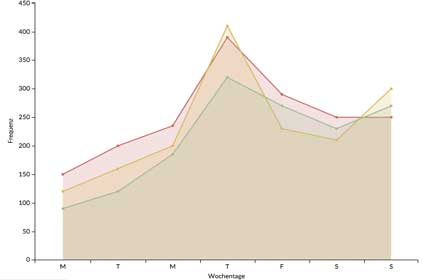
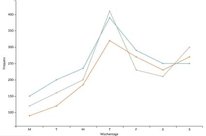

-

Entwicklung der weltweiten Durchschnittstemperatur ab 1900 bis 2010
Quelle: Statistisches Bundesamt
Jahr: 2012247 123 Mal -
CO2-Ausstoß für Deutschland, Europa und International 1985 bis 2015
Quelle: www.govdata.com
Jahr: 2015 165 123 Mal
165 123 Mal -
Anteil verschiedener Staaten am weltweiten CO2-Ausstoß im Jahr 2012
Quelle: www.un.org
Jahr: 2015 83 123 Mal
83 123 Mal -
Auswirkungen des Klimawandels auf die Niederschlagsmenge in Nigeria
Quelle: www.nigeria.opendataforafrica.org
Jahr: 2008 189 123 Mal
189 123 Mal -

Anteil verschiedener Faktoren am weltweiten Klimawandel
Quelle: www.data.worldbank.org
Jahr: 2010289 123 Mal -
Auswirkungen des Klimawandels auf die weltweite Artenvielfalt
Quelle: www.labs.geodata.gov
Jahr: 2011 267 123 Mal
267 123 Mal